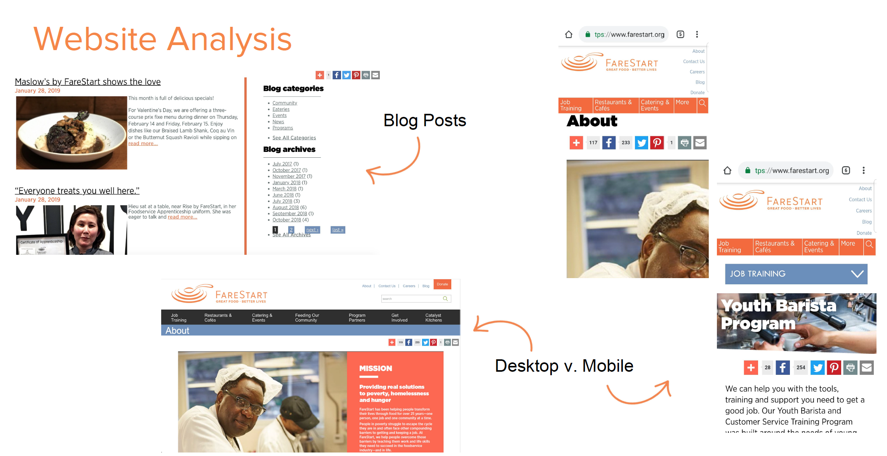
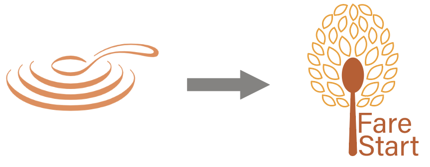
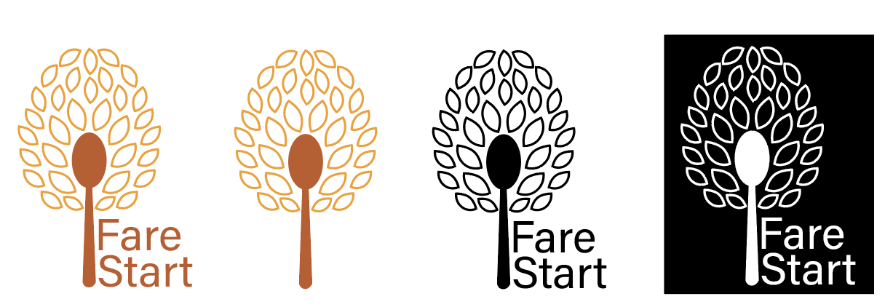

FARESTART BRAND BOOK
Context: Final project for HCDE 308 (Visual Communication in Human Centered Design and Engineering)
Duration: 3 weeks (Winter 2019)
Collaboration: Individual work
Tools: Adobe Illustrator, Adobe XD
As part of this project I played the role of a design consultant for my client, FareStart. FareStart is a nonprofit organization that focuses on providing real solutions to poverty and homelessness through food and food service. My job was to create a cohesive visual system that represented the client's ethos and mission.
After practicing design principles, typographic hierarchy, color, and integration of visual elements, I used a 5-design phase to create a new visual system for FareStart that communicated inclusiveness and excellence. This project's process included researching their mission, redesigning their logo, creating icons and mobile interfaces, and combining those elements into a cohesive brand book.
DESIGN RESEARCH
This was the foundation of my rebranding project. For this part I worked with a team of 4 to conduct background research on FareStart to understand their mission and how that mission is currently visually represented in their brand identity. This helped me find inconsistencies within their brand.
First, we researched their audiences and relationships. This helped get an understanding on who our visuals would reach and connect with. Then we did a brand identity analysis where we looked into their mission statement and engagement they promote and analyze how it was successfully or unsuccessfully portrayed in their brand identity.

Our last step was to analyze their social media (Facebook, Instagram, and Twitter) and website to find inconsistencies with their mission and while also finding confusing and unsuccessful design aspects. All of this design research helped me redesign their visual brand identity to successfully portray their mission and reach their targeted audiences.
COLOR PALETTE
I liked that FareStart used the color orange as their main color, but it wasn't the right shade of orange to convey their mission of compassion when helping their workers and the community. I thought it was too bright and cool tone.
I chose a complimentary color scheme of oranges and blues in order to convey a sense of elegance and to reflect FareStart's mission of making a lasting impact. The warmth of the oranges conveys comfort, while the brightness creates a sense of excitement for new beginnings. On the other hand, the blues convey a sense of serenity and stability for both the workers and cutsomers.
LOGO REDESIGN
The original logo is very simple, but it gave off a soup kitchen vibe, which did not reflect their goal of presenting themselves as a high class restaurant.
I started the redesign of the logo by brainstorming FareStart's mission/goals that I would reflect in their logo. Instead of focusing on the food aspect of FareStart, I wanted to hone in on their unique mission of helping individuals grow by teaching them new life and work skills through their restaurants and culinary apprenticeships.
I show personal growth with leaves blooming from the spoon. While the spoon represents FareStart teaching individuals skills through their culinary programs and apprenticeships. I made the spoon be a darker orange and the leaves be a lighter orange to represent warmth and comfort can grow fresh starts.

ICON DESIGN
Before designing the icons, I brainstormed important features on FareStart's website that would be the most used by their audience. I concluded that the two most important features were filling out their catering form and looking at their menus.
Menu Icon.
Catering Icon.
The menu icon leads the user to the list of FareStart's different menus, and the catering icon leads the user to its catering form to fill out. Since FareStart wanted to be a high class restaurant I chose for the icons to be clean and simple. The icons are the same color scheme as my logo to create cohesion across the visuals. I also wanted to match the rounded corners and boldness of the spoon in the logo with the icons to convey a sense of friendliness and warmth.
MOBILE WIREFRAMES
I started this part of the project by viewing their current website and finding users' pain points. One major pain point I found was on their catering form page. They have one catering form but multiple catering menus, one of which is specific to weddings.
I saw this as a paint point because FareStart wants to be seen as an
esteemed restaurant that is able to cater important events such as weddings but doesn't make
it intuitive or helpful for wedding planners to make a catering appointment specific to weddings that include tastings.
I thought FareStart should have a form that is specific to weddings.
After choosing to focus on a wedding catering form, I created three wireframes
to show the micro interaction of choosing an item on their menu to request to taste
during a wedding catering meeting with FareStart.
BRAND BOOK
This was the last phase of the project. The brand book is a culmination of my design work for rebranding FareStart's visual presence. It shares FareStart's story through their color scheme, logo, icons, photos, and app screens, all of which reflect their mission. FareStart.
View my full Brandbook: here.
TAKEAWAYS
Ideate, ideate, and ideate
This was my first official design class. We had an ideation exercise where we had to design logos for a product that combined dolphins and bobby pins. At first, I struggled to come up with more than 5 ideas, but the more I let my ideas run wild, ideating became easier. I used this new mindset when designing my entire brand book. It helped me break free from basic designs and create unique designs.
Set clear design goals
When making this brand book I learned that it's crucial to define your design communication goals early on. This helps you stay focused on your end goal for the design. When I felt lost and stuck on ideas, I went back to my communication goals to get myself back on track.
Back to Work next / prev
Tommi App
FareStart Brand Book
The Coeur System
Salmon Fun Run